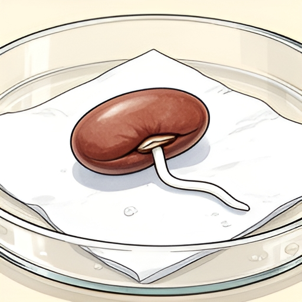
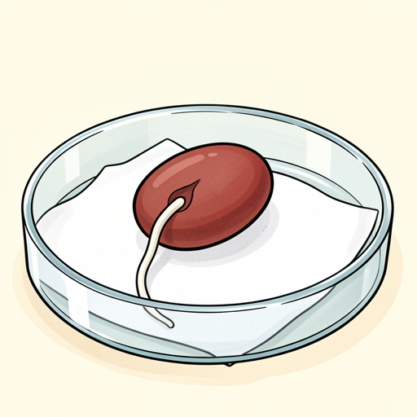

Выбрана для SANA
FLUX.2 dev
512×512 · 20 шагов · 6,95 с в этом тесте
Семя и прикреплённый к нему корешок видны ясно. Выбрана по деталям сцены и расходу квоты на выбранном размере.
Тест иллюстраций · 1 ноября 2026
Задание: одна фасолина на влажной салфетке в чашке Петри, из неё выходит небольшой белый корешок. Без листьев, стручков и надписей. Обе модели получили одинаковое подробное описание на английском и создали картинки на серверах Cloudflare.

512×512 · 20 шагов · 6,95 с в этом тесте
Семя и прикреплённый к нему корешок видны ясно. Выбрана по деталям сцены и расходу квоты на выбранном размере.

512×512 · 4 шага · 1,54 с в этом тесте
Тоже сохранила основной смысл сцены и оказалась быстрее. Корень вышел длиннее, чем требовалось в описании.
Qwen-Image-2512 в этом сравнении не запускалась: для неё не найден постоянный бесплатный API, подходящий для публичного сайта. Полный четырёхкадровый комикс на dev расходует около 4125 Neurons плюс текст и возможный повтор; бесплатная квота Cloudflare — 10 000 Neurons в сутки на весь аккаунт.